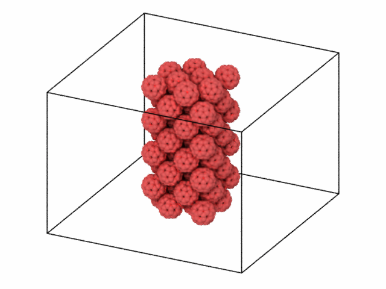

![]()
%%capture
! pip install -U ovitoRecipe 1: Simple import and visualization
How to Script with OVITO

Import OVITO modules
First we need to import the io and vis modules to create the necessary pipeline, Viewport, and render.
from ovito.io import import_file, export_file
from ovito.vis import Viewport
from ovito.vis import TachyonRenderer, OSPRayRenderer, OpenGLRendererStep 1: Import the LAMMPS dump file
Here we download a LAMMPS data configuration file format and then import it to create a OVITO pipeline. You can think of pipelines as workflows or steps that get applied to a imported file. The add_to_scene method just creates flag to make sure this pipeline gets included in visualization.
%%capture
!wget 'https://drive.google.com/uc?id=1uN3r_QeKvCi-d5ry16zr9VTVa0SpXuM2&export=download' -O data.FCC-C60-Pillar
pipeline = import_file('data.FCC-C60-Pillar',input_format='lammps/data')
pipeline.add_to_scene()Step 2: Create a viewport
A Viewport object is what you would see if you used the GUI version of OVITO. We will specify the type as being a Orthographic Projection and then we can state the vector for the camera view should be. Finally we zoom in to fit the the view port.
Much of this is a bit of an iterative process, because you need to toggle it, check the rendered image, and then adjust as desired.
viewport = Viewport(type=Viewport.Type.Ortho, camera_dir=(2, 1, -1))
viewport.zoom_all()Step 3: Render the scene & display
Now we specify the arguments for the method render_image of the Viewport which includes the renderer object itself.
render_args = {
'filename': 'FCC-C60-Pillar.png',
'background': (1.0, 1.0, 1.0),
'renderer': OSPRayRenderer() # Or use another renderer
}
viewport.render_image(**render_args);
Note
We just use the code below to display an image in a notebook.
from IPython.display import Image
fname = 'FCC-C60-Pillar.png'
Image(open(fname, 'rb').read())

Optional: Save a 3D Model
A nice feature is we can save a 3D model representation of our frame/viewport and then manipulate it in real-time in a browser or powerpoint.
export_file(pipeline,file="FCC-C60-Pillar.glb",format="gltf")Citation
BibTeX citation:
@online{bringuier2024,
author = {Bringuier, Stefan},
publisher = {Github Pages},
title = {Recipe 1: {Simple} Import and Visualization},
date = {2024-02-22},
url = {https://stefanbringuier.github.io/HowToSOVITO},
langid = {en}
}